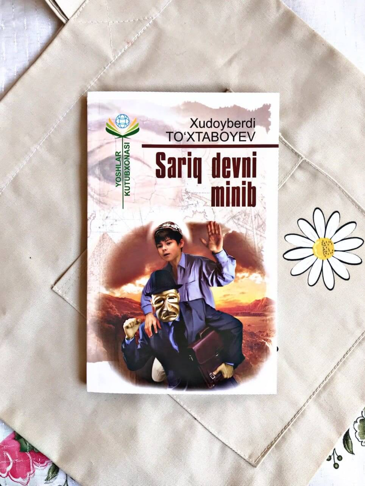

Sehrli Qalpoqcha
Bob 1

Ko'chaga quvildim
Tanishib qo‘yaylik: otim Hoshim, erkalatib chaqirmoqchi
bo‘lsangiz Hoshimjon deb aytasiz.
Familiyam — Ro‘ziyev, Ro‘zivoy traktorchining o‘g‘liman. Ruxsat bersangiz, oilamiz haqida ham
ikki-uch og‘iz so‘zlab o‘tsam: dadam ikki-uch yildan buyon cholda buldozer haydab yer tekislaydi,
oyimning aytishiga qaraganda o‘sha tomonlarga ham paxta ekisharmish. Bir oyda, ba’zan ikki oyda bir
kelib ketadi. Kelganida har birimizga alohida-alohida sovg‘a-salomlar olib keladi. Sovg‘aning eng
yaxshisi, albatta, menga tegadi. Oyim boisa uyimizdan uch yuz metr naridagi fermada sigir sog‘adi.
Bir o‘ziga 24 govmish qaraydi. O‘tgan yili sutni ko‘p soqqani uchun medal olgan. O‘sha medalni
oyimdan yashirib men ham ikki marta taqdim. Bir marta taqib bozorga borib sabzi-piyoz olib
keldim, ikkinchi marta taqib maktabga boruvdim, direktorimiz chaqirib olib rosa urishdi.
Katta singlim Oyshaxon to‘rtinchi sinfda o‘qiydi. Hovlini supurish,
idish-tovoqlarni yuvish o‘shaning bo‘ynida.
Oyim uni: «Oppoqqinam, jonimning hvzurb, deb erkalatgani-erkalatgan.
Oyim uni bag‘riga bosib suygan kuni men ham biqinidan sekin chimdib:
— Puchuqqinam, — deb qo‘yaman.
Kichik singlimning oti Donoxon. Hozir birinchi sinfda o‘qiyapti. Oyimning aytishiga qaraganda u
katta bo'lsa, albatta doktor bo'larmish. Menimcha, undan doktor chiqmasa kerak. Nega desangiz,
kolcha-kuyda hamshiralarga ko‘zi tushib qolsa ukol qiladi deb, tog‘dan-toqqa qochadi. Tunov kuni
maktab hovlisida oq xalat kiygan bufetchini ko‘rib doktor keldi deb derazadan tashlab qochibdi.
Rostini aytsam, o‘zim ham unchalik yomon bola emasman. Aql-hushim joyida, odobim ham chakki emas,
oltinchi sinfning intizomli o‘quvchilaridanman. Bir xil, haligi sho‘x bolalarga O‘xshab,
kunbo‘yi ko‘cha changitib yurmayman. Yashirib nima qilaman, ko‘cha changitib yurgandan ko‘ra
komandaga bo‘linib olib, to‘p tepgan yoki xoliroq joyga, masalan, oying harchand chaqirsa ham
ovozi yetmaydigan joyga borib olib chillak o‘ynagan ming marta yaxshi.
— Hoshim! — deb chaqiradi ba’zan oyim.
— Labbay, oyijon?
— Tomdan oltin tashlab bergin.
— Xo‘p bo‘ladi, oyijon, — deymanu sekin u yoq-bu yoqqa qarayman-da:
— Oysha! - deb qichqiraman.
— Labbay, akajon?
— Tomdan o‘tin tashlab bergin.
— Xo‘p bo‘ladi, akajon, — deydi Oysha.
Shunday demasa, ishlar chatoq. Och biqiniga musht kelib tushadi.
Ishqilib oyimning gapini hech yerda qoldirmayman. Aytganini o‘zim bajarmasam, birov orqali bajaraman.
Aslini olganda o‘zing bajarishing shart emas. Fermamizning mudiri Sirojiddin aka nuqul shunaqa
qiladi. Raisdan biron topshiriq olib kelsa a’zolariga topshiradi. Siz qanaqaligingizni bilmayman-ku,
lekin men mudirlikka o‘xshash ishlarni yaxshi ko‘raman. Shu o‘ynayversang-o‘ynaversang,
senga tegishli ishlarni birovlar bajaraversa-bajaraversa...
Yozuvchi Haqida
Xudoyberdi Toʻxtaboyev (1932-yil 17-dekabr, Oʻzbekiston tumani — 2021-yil 21-mart) — Oʻzbekiston xalq yozuvchisi (1991). Oʻzbekistonda xizmat koʻrsatgan madaniyat xodimi (1982). Qoʻqon pedagogika bilim yurtini (1949), Oʻrta Osiyo universitetini tugatgan (1955). Oʻrta maktabda oʻqituvchi va direktor (1955—\58).